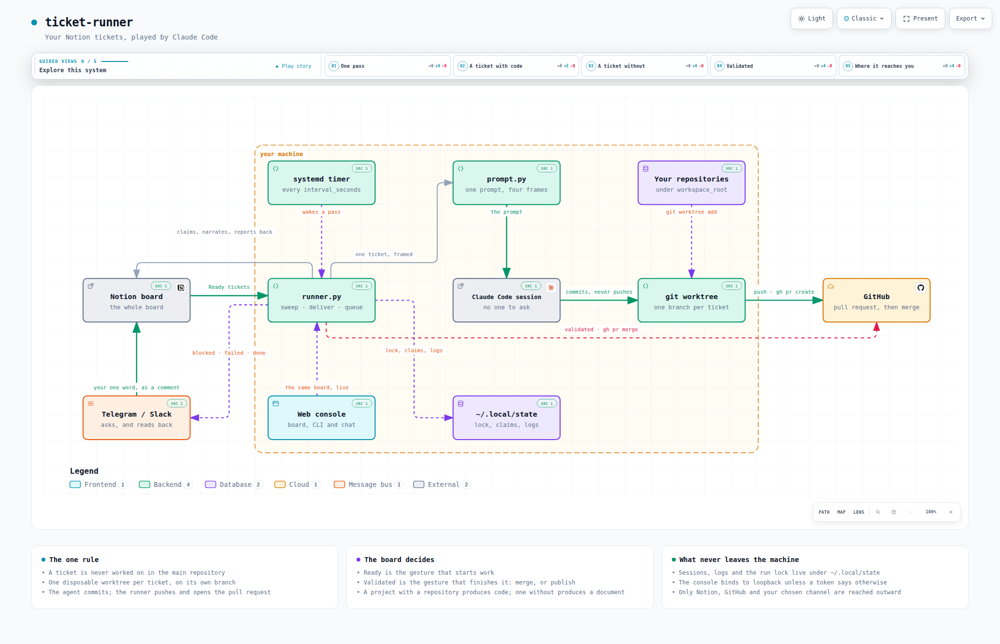

You write a ticket, you move it to Ready, and a few minutes later the work is waiting for you: a pull request on its own branch — or the page itself, written. One Claude Code session per ticket, in the background, across all of your projects.
The whole loop: Ready is you asking for the work, Validated is you accepting it, and Done means it is actually out. Between the two, the runner does the typing.
A systemd timer on your machine reads your Notion board, claims every ticket in Ready, and starts one Claude Code session per ticket. It never touches your working copy, and nothing reaches the outside world until you have moved a ticket to Validated.
A project that names a repository gets a worktree, a branch and a PR. One that names none gets its answer written into the ticket as real Notion blocks.
Every ticket gets a disposable git worktree of its own. Your branch, your uncommitted files, stay exactly as you left them.
Move a ticket to Validated and the runner merges its pull request — or publishes the post, the mail, the announcement — and only then calls it Done.
Reply under one of its reports and it answers, in the thread, having read the ticket, the project and the repository. It talks; it does not work.
A ticket the agent would not guess at asks its question on Telegram or Slack. oui is the whole answer — it lands on the ticket and the next run carries on.
ticket-runner serve: the same board live, the CLI in a browser, and a chat with your whole workspace — served from 127.0.0.1 and nowhere else.

$ curl -LsSf https://raw.githubusercontent.com/SalvadorCardona/ticket-runner/main/install.sh | sh
The script checks the dependencies, installs the ticket-runner command into ~/.local/bin, asks for your Notion token, and arms a systemd timer that picks up ready tickets every 30 minutes. It also starts the web console on http://127.0.0.1:8787 and prints the address to open it with.
ntn_. Give it Read comments and Insert comments under Capabilities: that is what lets it report on a ticket and be answered.··· menu → Connections → your integration. An integration cannot grant itself access, so this is the one step no command can take for you.$ ticket-runner init https://www.notion.so/your-page --token ntn_…
your page ← the one you shared └── ticket-runner ← the workspace: its rows are the master pages ├── Tickets ← the tickets database, 12 columns, 2 relations ├── Projects ← Name, Repository, Path ├── Agents ← the roles a ticket can be handled by └── Context ← a plain page: who you are
Plus a demonstration ticket, left unstarted, so the first thing you do is move something to Ready and watch it work. Running init again is safe — and is how you upgrade a board: what exists is kept, what a previous version did not know how to create is added.
$ ticket-runner doctor
It checks the token, the access to the database, the type of every column and the presence of each status — and names whichever of those was missed.
Running the install command again updates the installation: the code is replaced, your configuration is kept. You will rarely need to: once an hour, a run asks whether it is still on the latest version, and updates itself between two sessions if not. runner.auto_update = false turns that off.
python3 ≥ 3.11 — no dependencies to install, everything is in the standard library;git, Claude Code, and gh authenticated, for pull requests.| Variable | Effect |
|---|---|
TR_INTERVAL=10 | seconds between two runs (default: 1800, i.e. 30 min) |
TR_NO_SERVICE=1 | no timer and no console: you run ticket-runner run yourself |
TR_NO_WEB=1 | the console’s unit is installed, but left stopped |
TR_SRC=. | install from a local clone, without the network — and without self-updating |
TR_REF=v1.2 | install a tag instead of main, and stay on it |
$ curl -LsSf https://raw.githubusercontent.com/SalvadorCardona/ticket-runner/main/uninstall.sh | sh
TR_PURGE=1 also removes the configuration, the logs and the history. Branches already pushed are never touched.
This is where your control over the system lives. The names are yours — map them under [notion.status] — and doctor checks each one actually exists on the board.
| Status | What it means |
|---|---|
| Ready | the description is precise enough for an agent to handle it alone. The gesture that triggers work. |
| In progress | claimed by the runner. Stops the next run from taking it again. |
| In review | branch pushed, pull request opened. Yours to review. |
| Validated | you read it and said yes. The second gesture — the runner merges the pull request, or publishes what the ticket holds, and then closes it. |
| Done | that pull request has been merged — or the ticket produced a document, which has nothing to wait for. |
| Failed | something broke: the session, the push, the worktree. Its worktree is kept for the post-mortem. |
| Blocked | the agent would not guess and asked a question instead. Answer in a comment and the ticket runs again. |
In review rather than Done, because nothing is done when the runner lets go of a ticket: a pull request is waiting for a human, and a board that calls that Done stops being believed by the second week. Blocked is its own column rather than a shade of Failed, because a ticket waiting for you and a session that crashed are different days.
The body of the page is the brief: write there what you would tell a developer who does not know the subject. Leave the title empty and the runner writes one from the body. The rest is columns, and most are optional:
| Property | Role |
|---|---|
Project | relation — decides the repository, and therefore whether the ticket is code or a document |
Agent | relation — decides who handles it: one row per role, the body of its page is the role |
Priority | Urgent, High, Normal, Low — which ready ticket runs first |
Model | opus, sonnet, haiku — this ticket’s model, over its agent’s and over runner.model |
Scheduled | hold the ticket until that moment — a ready ticket waits to start, a validated one waits to go out |
Progress | what the session is doing right now, rewritten every ten seconds — Bash · npm test |
Session | written when the ticket is claimed. Make it a URL and its cell becomes a button that opens the conversation in a terminal |
Pull Request, Cost, Duration | filled by the runner at the end |
the context page who you are, what you work with, how you like things written ↓ the project page the conventions of THIS project — and whether it names a repository ↓ the agent page the role: “Dev front”, “Rédaction” — and, if it says so, the model ↓ the ticket the task
Whatever you write on a project page becomes standing instructions for every ticket of that project, written once instead of retyped. That is what turns “write me a post about the new tool” into your voice rather than a generic one — and, on a code project, what carries conventions that belong in no single ticket.
While the session works, its steps are written into the ticket on a ten-second cadence: one toggle per run, a bullet per file read and per command run, and what the agent said as a paragraph of its own.
⏳ Live — 12 step(s) · 3 min • Read src/app/header.component.html ────────────────────────────────────────────────────────────────── I will remove the banner from the template and the stylesheet rules that went with it, then run the tests. • Edit src/app/header.component.html • Bash npm test -- --watch=false
Every ticket is a real Claude Code session — the same transcript your own sessions produce. claude --resume <id> reopens it from any directory, and keeps working after the worktree is gone. When a ticket finishes, its transcript is filed under the repository, so claude opened there lists it in its session picker.
You read the pull request and it is good: someone still has to press Merge. You read the post and it is right: someone still has to publish it. That last step is pure mechanics — and it is the one part of a ticket the board always left to a human.
Notion ticket-runner what happens In review ──────▶ you read it. Good? │ └─ yes ──▶ Validated ─┬─ the ticket has a pull request │ gh pr merge --squash ──▶ it is in │ └─ it has none: a post, a mail, an announcement a session, told to publish what the ticket already holds ──▶ it is out Done ◀─────────── and only then
gh, the way merge_method says. One GitHub refuses — a conflict, a check still red — puts the ticket in Blocked with GitHub’s own wording in a comment.Status does not offer Validated is never even queried; you merge by hand, exactly as before.ticket-runner run --dry-run says what it would do without touching anything.The comments of a ticket go into the prompt, oldest first. A run asks a question, you answer it in a comment, and the next run reads your answer instead of asking again. Answering is the whole gesture: nothing to move on the board.
Running a ticket again is the right answer to do it differently. It is the wrong answer to why did you do it like that? — so a comment under one of its reports is simply answered, in the same thread, in the language you wrote in:
ticket/supprimer-l-entete-9d2cb790 · 2 commit(s) · github.com/…/pull/12main, qui contient déjà #11.It talks, it does not work. That is not a promise made in a prompt: the reply session runs under plan mode, which Claude Code cannot write from. Ask it for a change and it tells you what the change would take — which is the beginning of your next ticket. Name it — @claude — anywhere on a ticket it has run, and it answers there too.
The two moments that need you are the two you are least likely to be at your desk for: the agent asked a question, and a pull request is waiting. So the runner writes to Telegram or Slack — and what you answer there lands on the ticket, as a Notion comment, along the exact path a comment typed into Notion takes.
the runner your phone the ticket blocked ────────▶ 🙋 Blocked · Le header Which header — the dashboard one or the public site? notion.so/… │ │ “celui du dashboard” ▼ ✓ noted on “Le header” ──────▶ a comment on the page │ next run ◀──────────────────────────────────────────┘ the ticket runs again
No public URL, no webhook: the runner polls, which is what makes this the one channel that installs on a laptop behind a NAT.
/newbot → put the token in [notify.telegram] token;ticket-runner notify --pair reads that message and writes the chat id into your configuration;ticket-runner notify sends you a first message.Only that chat is ever read: a message from any other chat is dropped before it can become a comment on your board.
A question is posted to the channel and answered in its thread, which is how two tickets can be waiting at once without their answers being confused.
chat:write, plus channels:history (or groups:history, im:history);xoxb- token into [notify.slack] token;/invite @your-bot in the channel — the step everyone forgets — and put the channel ID in channel.[notify] replies = true # read what you write back events = ["blocked", "failed", "done"] # the moments worth a message
yes, oui, ok, go, 👍 — and their opposites — are read as a verdict and spelled out for the session that will read them. Anything else travels verbatim.
A second window on the same workspace, served from your own machine — running already: the installer starts it and prints the address, token included.
┌───────────────┬──────────────────────────────┬─────────────────────────────┐ │ ticket-runner │ Ready 2 │ you │ │ v0.9.2 │ ┌────────────────────────┐ │ Where is the SQLite ticket │ │ │ │ Retirer le bandeau │ │ │ │ ▸ Board 4 │ │ Site vitrine · High │ │ workspace │ │ 1 ready │ └────────────────────────┘ │ Six minutes in, on Trader │ │ Ticket │ │ IA. It has rewritten │ │ #1a2b3c │ In progress 1 │ src/storage.py and is on │ │ Console │ ┌────────────────────────┐ │ pytest. Nothing committed. │ │ Live 1 │ │ Migrer vers SQLite │ │ │ │ Settings │ │ Bash · pytest -q │ │ > status │ │ ● live │ └────────────────────────┘ │ timer on · 30 min │ └───────────────┴──────────────────────────────┴─────────────────────────────┘ the menu the board, live the console
The Notion board, read from Notion and written back to it. Moving a card moves the ticket. What it adds is the running session’s steps, live, and a validate button on every card in review.
Click one and the Ticket pane becomes that ticket’s terminal: everything said on it, and a field to say the next thing. What you type is a comment on the ticket — the gesture the runner already knows.
A line starting with > is a ticket-runner subcommand, streamed into the page. Anything else is a message to your workspace: one long Claude Code session with your repositories under its feet.
config.toml drawn as a page — every key, from the Notion token to what your board calls its Blocked column. A save is all of it or none of it; your tokens never come back to the browser.
The console is arbitrary code execution on the machine that runs it. The chat starts Claude Code sessions with the same bypassPermissions the runner uses — that is what makes it useful, and it is the whole of the risk. So it binds 127.0.0.1 and refuses any other host unless web.token is set on purpose; every request carries that token; and writes demand a header a cross-origin form cannot set.
To reach it from your phone or another machine, tunnel rather than widen:
$ ssh -L 8787:127.0.0.1:8787 <the machine running it>
The page is a React application — TypeScript, Vite, shadcn/ui — and what ships is the build, committed beside the Python that serves it. Nothing about the console asks the machine that runs it for Node: no CDN, no web font, no analytics. Node is a thing you need to change the console, not to use it.
~/.config/ticket-runner/config.toml — created by the installer with mode 600, opened by ticket-runner config, and drawn as a page in the console’s Settings tab.
[notion] token = "ntn_…" workspace = "https://www.notion.so/…" # the database whose rows are your master pages [notion.pages] tickets = "Tickets" # required — the others are found by the title of a row projects = "Projects" agents = "Agents" context = "Context" [runner] workspace_root = "~/workspace" # where to look for repositories interval_seconds = 1800 # between two passes — `ticket-runner enable` applies a change max_concurrent = 2 # tickets handled side by side timeout_minutes = 30 model = "" # "opus", "sonnet"… empty = the CLI's default permission_mode = "bypassPermissions" # see “What protects your code” branch_prefix = "ticket/" merge_method = "squash" # how a validated pull request is merged reply = true # answer in the comments progress = true # narrate the session into the ticket auto_update = true [projects] "Trader Ia" = "~/workspace/labo/trader-ia" # for repositories that cannot be guessed [notion.status] done = "Shipped" # if your columns have other names failed = "Needs you" [web] host = "127.0.0.1" port = 8787
| Key | Default | Effect |
|---|---|---|
runner.interval_seconds | 1800 | down to a few seconds if you want a ticket picked up as soon as you move it |
runner.push / open_pull_request | true | false: commits stay local, or the branch is pushed without a PR |
runner.permission_mode | "bypassPermissions" | "acceptEdits" forbids unapproved shell commands — at the cost of sessions that stop often |
runner.keep_worktree_on_failure | true | keep enough around to understand a failure |
runner.attach_sessions | true | file each session under its project, so claude --resume there lists it |
runner.session_host | "" | the ssh destination a Session link opens, when the runner lives on a server |
runner.prompt_file | "" | your own prompt template — and document_prompt_file, delivery_prompt_file for the two other kinds of session |
notion.tickets_database | "" | one database instead of a workspace; wins when both are set |
The full list, with every default, is in the repository README and in config.example.toml.
The timer does the work. The command line is for looking, and for the first attempt — best made by hand, on a ticket you choose.
$ ticket-runner run --ticket https://www.notion.so/... --dry-run # look first $ ticket-runner run --ticket https://www.notion.so/... # then go
$ ticket-runner init <url> # build (or complete) the Notion board under a page $ ticket-runner list # the ready tickets, and their project $ ticket-runner run # one run, right now $ ticket-runner logs -f # follow the running session $ ticket-runner status # timer, console, current run, recent tickets $ ticket-runner history # what has been handled, with cost, duration and pull requests $ ticket-runner projects # Notion project → local repository mapping $ ticket-runner doctor # full diagnostics $ ticket-runner clean --force # remove worktrees, their branches, and scratch dirs $ ticket-runner update # move the installation to the newest version $ ticket-runner enable # apply interval_seconds, start the timer and the console $ ticket-runner disable # stop the timer and the console $ ticket-runner serve # the web console, in this terminal $ ticket-runner notify # send yourself a test message on Telegram or Slack
clean --force removes a ticket’s branch along with its worktree — but only when nothing on it is anybody’s but the runner’s. A branch with commits not on the base, one whose pull request is still open, or a worktree holding uncommitted changes: those are kept, named, and given the reason, since a commit that failed to push is sometimes the only copy there is.
Eight guardrails, all of them on the program’s normal path rather than in a prompt.
Every ticket gets a disposable git worktree on its own branch. Your working copy, your uncommitted files and your current branch stay exactly as you left them — and two tickets on the same project can move at once.
Pushing a branch and opening a PR are outward-facing gestures: they happen afterwards, once it is established that there are commits at all. A session that declares itself done without committing anything is treated as a failure.
The prompt explicitly asks the agent to answer RESULT: blocked and stop rather than decide in your place. The ticket goes to Blocked with the question in a comment.
The others in the same run carry on. Its worktree is kept for the post-mortem, and the session ID reopens the conversation exactly where it stopped. The next attempt picks that same branch up — rebased onto the base branch first — rather than starting from nothing.
A conversation runs in the repository itself, but under plan mode, which Claude Code cannot write from. Asking it a question can cost you a minute of its time and nothing else.
A file lock means a run that outlasts the timer’s interval is not lapped by the next one.
Any ticket still marked In progress at the start of a run was abandoned — by a reboot, a crash. It goes back in the queue with a comment saying so. One exception: a ticket abandoned mid-publication is never silently redone — it goes to Blocked asking whether the thing went out.
A merge, a post, an email: the runner does none of them until a human has moved that ticket to Validated. A session cannot put itself there, and no configuration key merges a pull request the way open_pull_request opens one.
One thing to know. By default the runner starts the session with permission_mode = "bypassPermissions", because a session with nobody to ask cannot ask. The isolation comes from the worktree, not from the permission model — and it protects your repository, not the machine. Whoever can move a ticket to Ready can have commands run under the account the runner uses. On a personal laptop that is the trust you already give Claude Code; on a shared board it is a different proposition.
And one thing to weigh, if you use Validated. A publishing session uses the credentials that machine holds. Read the ticket before you validate it: validating is the trust boundary of this whole tool.
The runner is at its best where it never sleeps, and five things change when it moves off your laptop: Claude Code needs its own credentials there (or ANTHROPIC_API_KEY); gh has no keyring, so put a narrowly scoped GH_TOKEN in the unit; a [projects] entry overrides the board’s paths for that machine; session_host makes the Session links open over ssh; and Telegram or Slack stop being a convenience and become the way you hear about anything at all. Run one runner, not two — and on a shared board, a dedicated account, and editing rights limited to the people you would let run a command on that machine.
ticket-runner doctor checks the token, the database, every column, every status, the comment capabilities, the notification channels and the version — and names what is missing.
object not found on the databaseThe page is not shared with the integration: ··· → Connections. Sharing the page that holds the workspace covers everything under it — this is the step everyone forgets, and nothing in the error hints at it.
The integration cannot read or write comments: my-integrations → Capabilities → Read comments, Insert comments. Or the comment is not addressed to it — reply under one of its reports, or name it. doctor tries it on a real ticket and says which.
Its project names no repository. Give the project page a Path or a Repository, or add "Notion name" = "/path" under [projects]. The runner never guesses from a project’s name: ticket-runner projects shows which is which.
gh cannot reach its credentials from a systemd service — locked keyring. Use gh auth login with a token, or set GH_TOKEN in the unit.
$ sudo loginctl enable-linger $USERclaude: command not found in the journalThe PATH baked into the unit predates a node version change: run install.sh again.
A bare “oui” answers the last question asked. In a shared room, reply in the thread of the question, or paste the ticket’s link. And the bot needs channels:history to read the channel at all.
$ ticket-runner logs -f # the live feed of the running session $ ticket-runner logs <ticket id> # a past session, rendered $ journalctl --user -u ticket-runner -f # the timer's own journal $ claude --resume <session id> # reopen the conversation itself
Session logs live in ~/.local/state/ticket-runner/logs/, one .jsonl per ticket. The full symptom table is in the
repository README.